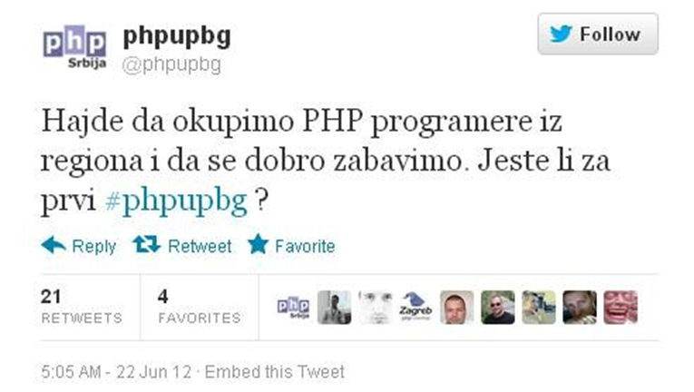
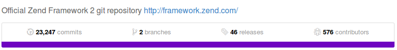
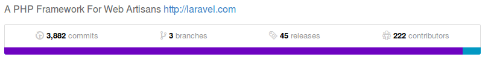
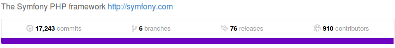
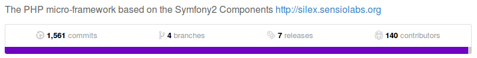
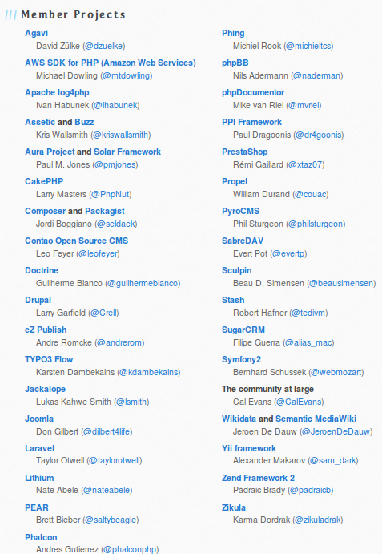

PHP SRBIJA
Agenda
- PHP Srbija
- History of PHP
- Why PHP?
- Composer
- PSR 0,1,2,3,4...
- Frameworks
- Symfony 2
- Laravel 4
- Zend 2

Why?
Members
Why are we different?
What we done so far?
- 4 events
- over 20 speakers
- supported by over 20 companies
- more than 1000 participants
- exyu community gathering
- cooperation with Google
- cooperation with Owasp
Plans?
PHP

www.milanpopovic.me / Milan Popović @komita1981
History of PHP
Created in 1994 by Rasmus Lerdorf - @rasmus
Written in C
Personal Home Page Tools
History of PHP
Timeline
- PHP 1 - 1995
- PHP 1 - 1996
- PHP 3 - 1998 - popularity gained
- PHP 4 - 2000 - wannabe object
- PHP 5 - 2004 - OO support
- PHP 5.3 - 2009
- PHP 5.4 - 2012
- PHP 5.5 - 2013
History of PHP
Andi Gutmans and Zeev Suraski
PHP - Hypertext Preprocessor

WHY PHP???
<?php
$db = connect_mysql('192.168.1.1', 'root' , 'secretPassword123' );
$item = get_mysql_data('SELECT * FROM my_table WHERE id=' . $_GET['id']);
?>
<html>
<head>
<title><?php echo $item['title'];?></title>
</head>
<body>
<table>
<?php
$users = get_mysql_data('SELECT * FROM users WHERE bla = '.$item[ 'id2'] );
?>
<?php for($i=0; $i< count($users);$i++){ ?>
<tr><td><?php echo $users[$i]['username'] ?></td></tr>
<?php } ?>
</table>
</body>
</html>
namespace League\Flysystem;
use LogicException;
use InvalidArgumentException;
class Filesystem implements FilesystemInterface
{
/**
* @var AdapterInterface $adapter
*/
protected $adapter;
/**
* @var Config $config
*/
protected $config;
/**
* Constructor
*
* @param AdapterInterface $adapter
* @param mixed $config
*/
public function __construct(AdapterInterface $adapter, $config = null)
{
$this->adapter = $adapter;
$this->config = Util::ensureConfig($config);
}
Hosting
Shared
VPS
Dedicated servers
Heroku
Google App Engine
Azure
Popularity - TIOBE index

Popularity - usage of languages

Popularity - number of developers
More than 5 millions PHP developers worldwide
Up to one thousand PHP developers in Serbia


 
 
PHP FIG
PHP Framework Interop Group

PSR
Php Standard Recommendation
Autoloading standard - PSR-0
Basic coding standard - PSR-1
Coding style guide - PSR-2
Logger interface - PSR-3
Improved autoloading - PSR-4
Composer

Dependency Manager for PHP
The problem that Composer solves is this:
- You have a project that depends on a number of libraries.
- Some of those libraries depend on other libraries.
- You declare the things you depend on.
- Composer finds out which versions of which packages need to be installed, and installs them (meaning it downloads them into your project).
Declaring dependencies
composer.json
{
"name": "zendframework/skeleton-application",
"description": "Skeleton Application for ZF2",
"license": "BSD-3-Clause",
"keywords": [
"framework",
"zf2"
],
"homepage": "http://framework.zend.com/",
"require": {
"php": ">=5.3.3",
"zendframework/zendframework": "2.2.*",
"aws/aws-sdk-php-zf2": "1.2.1",
"league/flysystem": "0.4.*@dev"
}
}
{
"require": {
"vendor/package": "1.3.2",
"vendor/package2": "1.*",
"vendor/package3": ">=2.0.3"
}
}
Packagist statistics
- 29 908 packages registered
- 110 247 versions available
- 207 357 630 packages installed (since 2012-04-13)
Best framework

- Zend Framework 1, 2
- Symfony 1, 2
- Laravel
- Phalcon
- Silex
- FuelPHP
- Yii
- CakePHP
- Codeigniter
Symfony 2
PHP Framework for Web projects
Created by Vladimir Popov / @vladapopov
Symfony info
- Currently in version 2.4.4
- Sensio Labs
- Fabian Potencier
- symfony.com
Why Symfony?
Framework characteristics
- Modular by using Bundles
- MVC structure
- High performance
- Component oriented
- Community driven
- Tuned with PHP
- Great documentation. The Book, Cookbook.
Main differences
- Symfony is a project. Components, Silex, full stack ...
- Used widely
- Huge community and large number of contributors
- Over 2200 ready to use bundles
- Don't reinvent the wheel philosophy, Twig, Doctrine, Monolog ...
Components
- Easy install via composer
- Form
- Dependency Injection
- EventDispatcher
- HttpFoundation
- Console
- Other components
Working environments
- Development
- Production
- Custom
Web Developer Toolbar
Available in dev working environment

Request & Response
How it works?

The Symfony Application Flow
From request to response

Robust
Recommended for large projects
Not very easy to learn
- Steep learning curve
- Good documentation on the other hand
Laravel
The PHP Framework for Web artisans
Created by Tihomir Opačić / @tihomiropacic
Under the hood
Minimum requirement: PHP >= 5.3.7
Uses the best PHP has to offer
PSR-0 and PSR-1 standards
Decoupled framework based off Symfony framework
Composer dependency management system
Community Centric
Friendly community
Great free and paid resources
Documentation
Solid documentation
Great Literature (7 books in last year)
Supports different programming design patterns
Based off MVC
CQS or CQRS
Domain-driven design
Repository Pattern
Event Driven Architecture
A Great Tool
Great for rookies
Support you as you grow as a programmer
Great for seniors, too
Highlights
Soft learning curve
Intuitiveness
Superhero hapiness at work